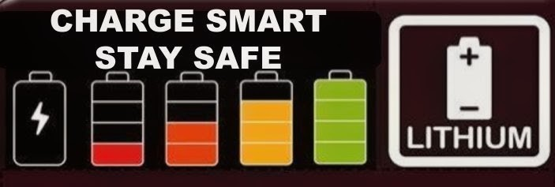

SAFE USE • SAFE CHARGE • SAFE DISPOSAL
#CHARGESMARTSTAYSAFE
Protect your home from
lithium battery fires
Lithium-ion batteries are used every day in phones, laptops, e-bikes, e-scooters, power tools and many other rechargeable devices.
They are safe when used correctly, but if damaged, incorrectly charged or poor quality they can fail without warning.
A lithium battery fire develops rapidly, burns at extremely high temperatures and produces toxic smoke.
🔥 Most fires involving lithium batteries occur while the battery is charging.
WHAT POWERS LITHIUM BATTERIES?
Phones
Banks
Vapes
Tools
Vehicles
Storage
✓ CHARGE SMART
- Use the charger supplied with the device or recommended by the manufacturer.
- Charge on a hard, flat surface.
- Allow batteries to cool before charging.
- Unplug chargers once charging has finished.
- Keep escape routes clear.
- Install smoke alarms nearby.
- Register products for recalls.
✕ DO NOT
- Never leave batteries charging overnight or unattended.
- Do not charge on beds, sofas or soft furnishings.
- Do not use damaged batteries or faulty chargers.
- Do not cover batteries while charging.
- Do not modify batteries or chargers.
- Do not buy poor-quality or non-compliant products.
⚠ WARNING SIGNS
- Battery feels unusually hot.
- Battery swelling or leaking.
- Strange smell.
- Hissing or popping noises.
- Smoke.
- Visible damage.
E-BIKE & E-SCOOTER SAFETY
🚲
- Buy from reputable retailers.
- Look for UKCA or CE marking.
- Use the correct charger.
- Never charge unattended.
- Keep away from combustible materials.
- Do not block exits.
♻ DISPOSE SAFELY
Lithium batteries should never be placed in household waste or recycling bins.
Household waste sites • Supermarket collection points • Retail take-back schemes Find your nearest recycling pointIF A BATTERY CATCHES FIRE
- Get everyone out.
- Close doors behind you.
- Call 999.
- Do not attempt to tackle the fire.
- Warn others to stay away.
OUR EIGHT PRINCIPLES OF BATTERY SAFETY
DOWNLOADABLE RESOURCES
Home Fire Safety Guide PDF E-Bike Charging Checklist PDF Battery Disposal Guide PDF Business Safety Poster PDF School Education Pack PDFFREQUENTLY ASKED QUESTIONS
Can I charge my e-bike overnight?
No. Charge while awake and present.
Is it safe to use third-party chargers?
Use the manufacturer-approved charger.
What should I do with a swollen battery?
Stop using it and seek advice.
Can lithium batteries explode?
Damaged or overheated batteries can fail violently.
How do I recycle lithium batteries?
Use an approved battery or electrical collection point.
REPORT A DANGEROUS PRODUCT
If you believe a battery, charger or device is unsafe, report it to help keep others safe.
- Report to Trading Standards.
- Report to the manufacturer or retailer.
- Stop using the product immediately.
Scan to explore the campaign
Open the live Charge Smart Stay Safe website on your phone.